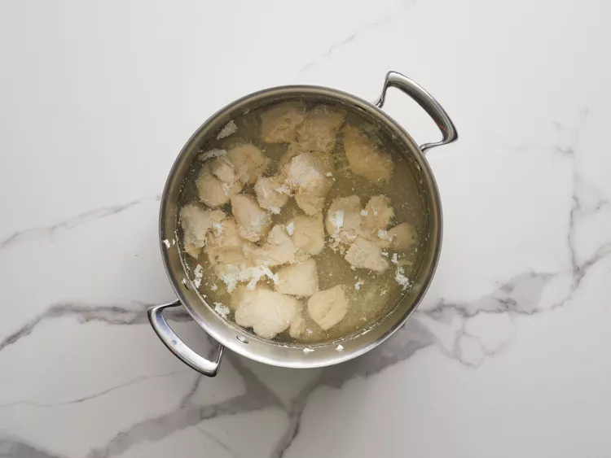
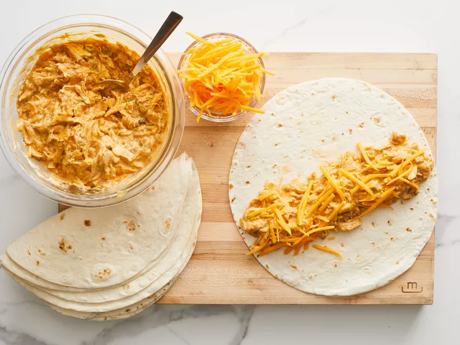
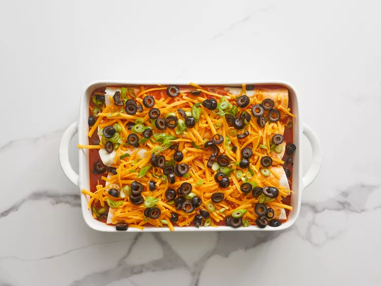

Place chicken into a large pot and add water to cover.
Bring to a boil over high heat, then reduce the heat to medium-low, cover, and simmer until chicken is no longer pink
and the juices run clear, about 10 minutes.

Shred chicken with two forks.
Bring to a simmer, stirring occasionally, then turn off the heat and cover to keep warm.
Add shredded chicken, water, 1/2 of the green onions, green chiles, and taco seasoning; simmer for 10 minutes.
Stir in lime juice, onion powder, and garlic powder; simmer for 10 more minutes.
Fill each tortilla with 1/5 of the chicken mixture and about 5 tablespoons Cheddar cheese.

Roll tortillas around filling and place enchiladas, seam-side down, into the baking dish.
Pour enchilada sauce over top and sprinkle with remaining Cheddar, remaining green onions, and olives.

Bake in the preheated oven until filling is heated through and cheese is melted and bubbling, about 25 minutes.